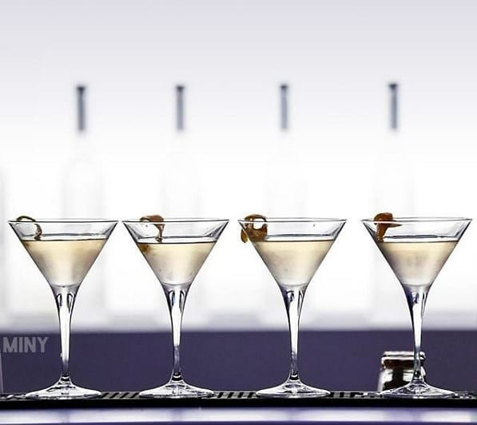
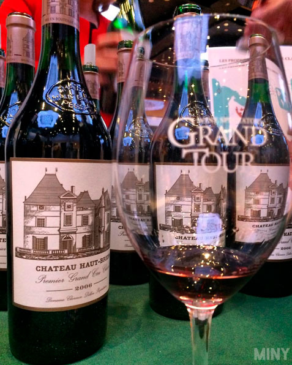
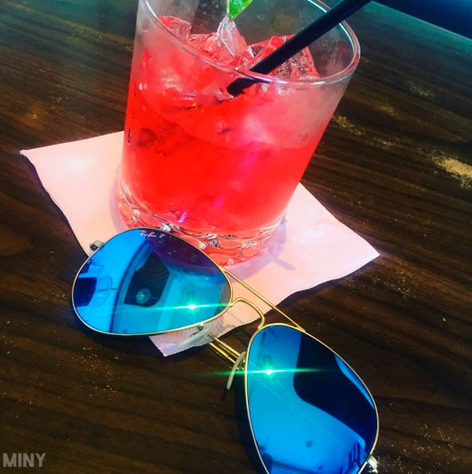
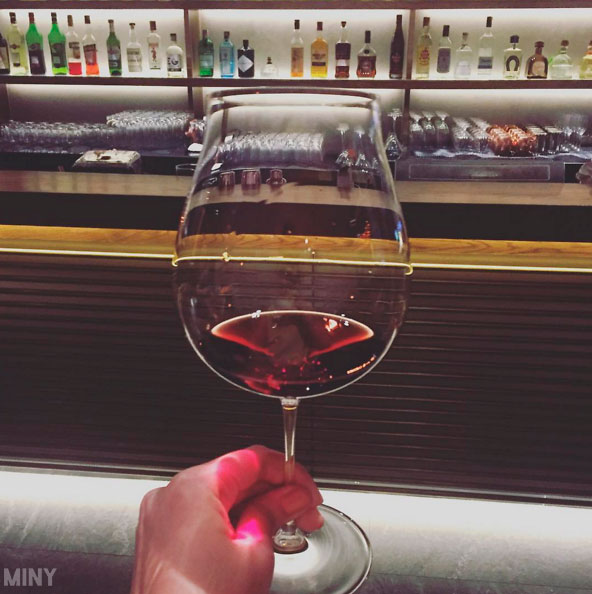
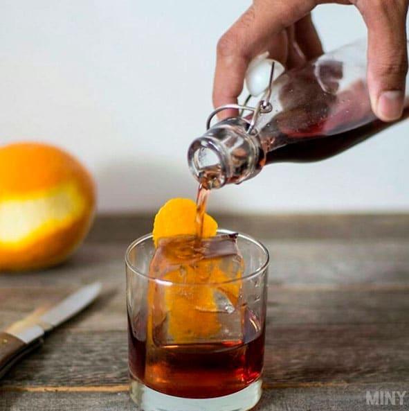
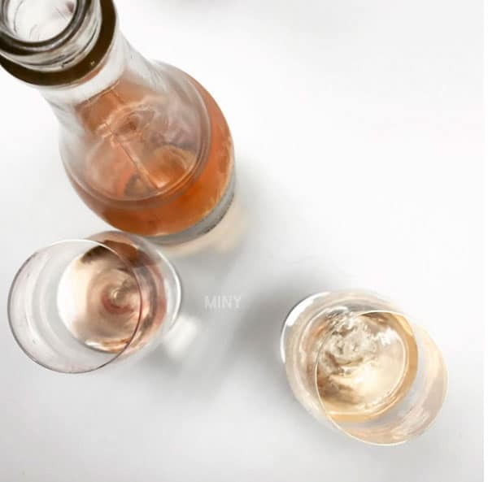
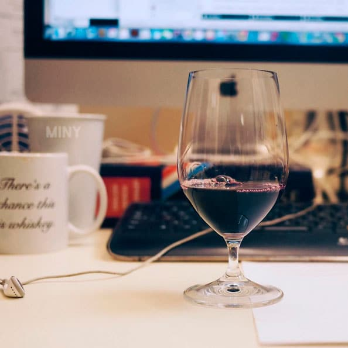

ПРО АЛКОГОЛЬ |
||
|
Вред алкоголя: 1. Алкоголь — это причина многих болезней, подлостей, недисциплинированности, загубленных талантов, бессмысленных конфликтов и бедности. 2. Трудно найти большее зло, чем алкоголь, которое бы так упорно и безжалостно расстраивало здоровье миллионов людей, так резко разрушало бы все ткани и органы человека (в особенности кору головного мозга), ум и личность человека, приводя его в конце концов к ранней смерти. Коварство этого яда заключается в том, что тяжелые последствия от вреда алкоголя наступают не сразу, постепенно, незаметно. 3. О влиянии алкоголя на жизнь человека говорят такие факты: 50 процентов аварий, 1/3 самоубийств, 80 процентов смертей от рака полости рта и пищевода происходит из-за злоупотребления алкоголем. 4. Стакан спиртных напитков губит в нашем мозге 1000-2000 клеток. Эти данные подтвердились у 95% алкоголиков и 85% умеренно употребляющих. 5. Исследования доказали, что вероятность родить здорового человека у пьющих в 15 раз меньше, чем у непьющих, смертность у их детей в 5 раз выше, а болезненность выше в 3,5 раза 6. Эксперименты, проведенные на куриных яйцах, показали следующее: 160 яиц заложили под птицематку в сарае, в подвале которого варился спирт. Пары спирта действовали на яйца. Когда подошел срок получился следующий результат: птенцы вылупились только из половины, из них 40 — мертвыми, 25 — мутантами (без клюва, без когтей и т.п.). 7. Согласно данным ВОЗ (Всемирная Организация Здоровья), каждый третий на земле погибает от причин, связанных с потреблением алкоголя, каждый пятый — от причин, связанных с курением. Значит, от этих причин в России мы теряем почти полтора миллиона человек в год, что в 20 раз превышает количество жертв атомного взрыва в Хиросиме. 8. Заверения некоторых заядлых пьяниц в том, что, выпив, они чувствуют облегчение, есть чистейший самообман, вызванный параличом центров внимания и самоконтроля. Больной от приема любой дозы алкоголя впадает в состояние эйфории, и ему все, даже его собственная болезнь, представляется в розовом цвете. На самом деле прием алкоголя в любом количестве только усугубляет процесс и приносит вред человеку. 6. По статистике пьющие люди живут в среднем на 10-15 лет меньше. 10. Алкоголь создает иллюзию снятия напряжения. На самом же деле напряжение в мозгу и во всей нервной системе сохраняется, и когда пройдет хмель, напряжение оказывается еще большим, чем до принятия вина. Но к этому добавляется еще ослабление воли и разбитость. Рейтинг вредности алкогольных напитков 1) Ром Ром хорошо влияет на пищеварение и желудочно-кишечный тракт. Однако это спиртное очень калорийное и при чрезмерном употреблении, как и любой алкоголь, разрушает печень. 2) Водка Водка не содержит сахаров и других источников углеводов, калории в ней обеспечены только спиртом (примерно 7 ккал/г). Поэтому вреда от нее меньше всего. Однако нередко люди превышают допустимое количество потребления. 3) Пиво Пиво хоть и не крепкое спиртное, однако оно ведет к отложению солей в суставах и развитию подагры, приводит к ожирению и проблемам с сердечно-сосудистой системой, гормональному дисбалансу как у мужчин, так и у женщин. 4) Белое вино Белое вино способно снижать уровень холестерина в крови, но со временем в нем образуются сульфиты. Эти вещества могут вызывать тяжелое похмелье, аллергические реакции, приступы мигрени и астмы, портить зубы. 5) Красное вино В этом алкоголе много резерватрола - природного антиоксиданта. В небольших количествам вино предотвращает тромбообразование, воспалительные процессы, снижает уровень холестерина. Но в нем содержатся два вида спирта - этанол и метанол. Печень может осилить их лишь поочередно, а затянувшийся процесс вызывает тяжелое похмелье. 6) Шампанское В игристых винах содержатся антиоксиданты, которые оберегают от разрушения нервных клетки. Однако с пузырьками алкоголь всасывается в кровь намного быстрее. 7) Виски В состав односолодовых виски входит полезная эллаговая кислота, которая может замедлять рост раковых опухолей определенного типа и даже убивать раковые клетки. Но любовь к этому напитку может обернуться приступами ярости. Из-за крепости напитка и традиции пить его неразбавленным и без закуски, виски быстро приводят к состоянию опьянения. 8) Бренди Бренди богато антиоксидантами, но вызывает очень сильный похмельный синдром. С повышением выдержки в нем повышается и содержание вредных веществ. То же относится к рому, джину, красному вину и виски. Удивительных полезных свойств алкоголя: Водка полезна для сердца  В научном сообществе уже давно знают о пользе водки для сердечно-сосудистой системы. Исследование показало, что этот спиртной напиток помогает создавать коллатеральные кровеносные сосуды, которые образовывают больше связей между сердцем и легкими, в конечном итоге улучшая кровообращение. Управляй уровнем холестерина  Было обнаружено, что красное вино повышает уровень хорошего холестерина и снижает уровень плохого холестерина. Все очень просто, не задавай лишних вопросов – пей! Клюква и водка помогут стать Эйнштейном  Исследование, включавшее в себя головоломки и выпивку, показало, что этот необычный микс стимулирует интеллектуальную деятельность (мышление, понимание, обучение и запоминание). В следующий раз, когда ты захочешь почувствовать себя гением, отправляйся в бар и закажи этот коктейль. Случайные посетители с радостью подтвердят, что были рядом с тобой в тот момент, когда тебя посетила идея, способная изменить мир.:) Излечbсь от простуды  Не так-то просто хорошо выглядеть, когда твоя сумочка доверху забита носовыми платками. Оказывается, если выработать привычку регулярно выпивать немного вина, то можно забыть о ежегодной раздражающей простуде. Ученые обнаружили, что красное вино снижает вероятность заразиться простудой на 60%. Новейшая диета – Текила бум  Все верно. Текиле вполне по силам помочь тебе уменьшить талию. Исследования показали, что этот напиток, основанный на экстракте агавы, понижает уровень глюкозы и поддерживает чувство сытости. Конечно, запивая текилу Маргаритой, полной сахара, этого эффекта не добьешься. Поэтому пей умеренно, веселись и кокетничай! Укрепи свои репродуктивные функци  Согласно многочисленным исследованиям полезных свойств алкоголя, спиртные напитки стимулируют кровообращение и, таким образом, уменьшают случаи эректильной дисфункции у мужчин, а также повышает сексуальное влечение к женскому полу. Вино поможет тебе лучше учится и запоминать  Да, прими это как разрешение налить себе еще один бокальчик во время подготовки к экзаменам. Ресвератрол, вещество содержащееся в виноградных шкурках, заставляет твой мозг запоминать все: будь то экономические формулы или имена людей на вечеринке. Быстрее восстанавливайся после тренировки После интенсивной, наполненной эндорфинами, тренировки в спортзале, побалуй себя пивом. Исследования показали, что пиво компенсирует потерю влаги так же хорошо, как и вода. Выбор за тобой |
||
| Чем полезен алкоголь | ||